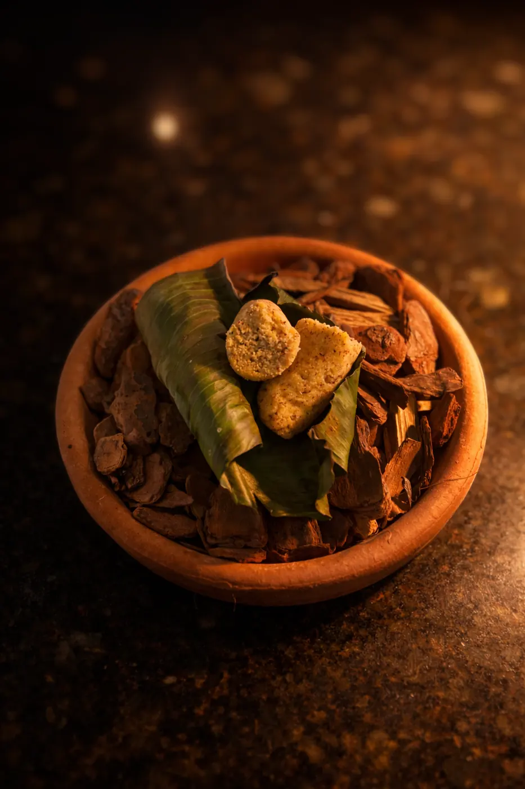
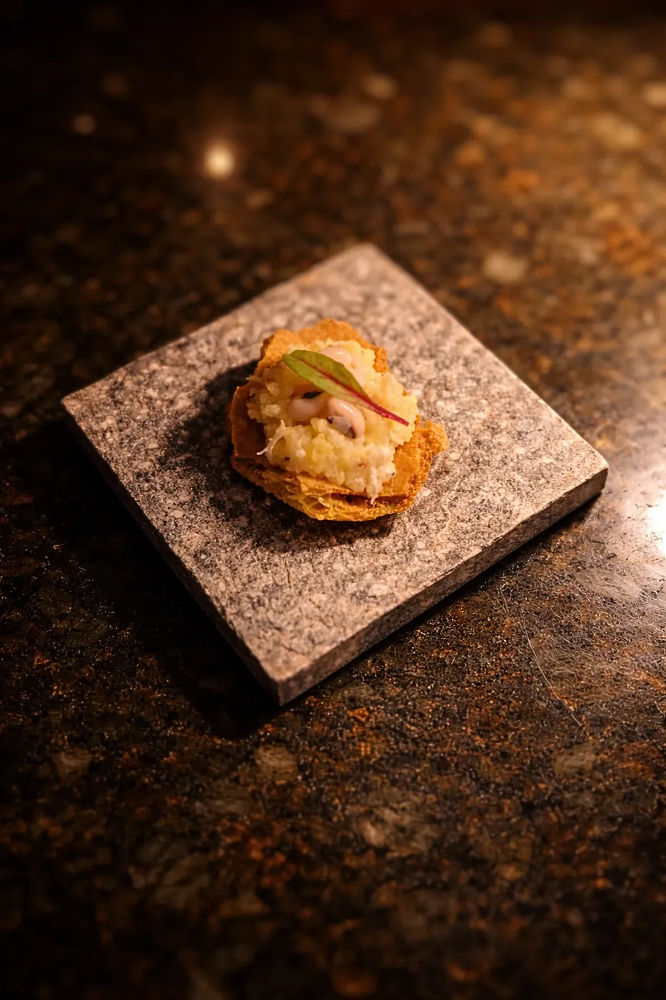
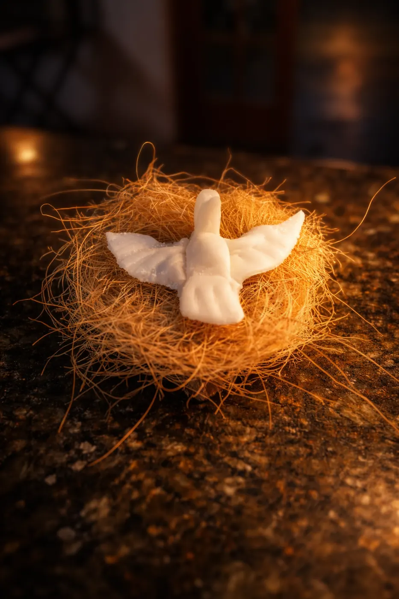
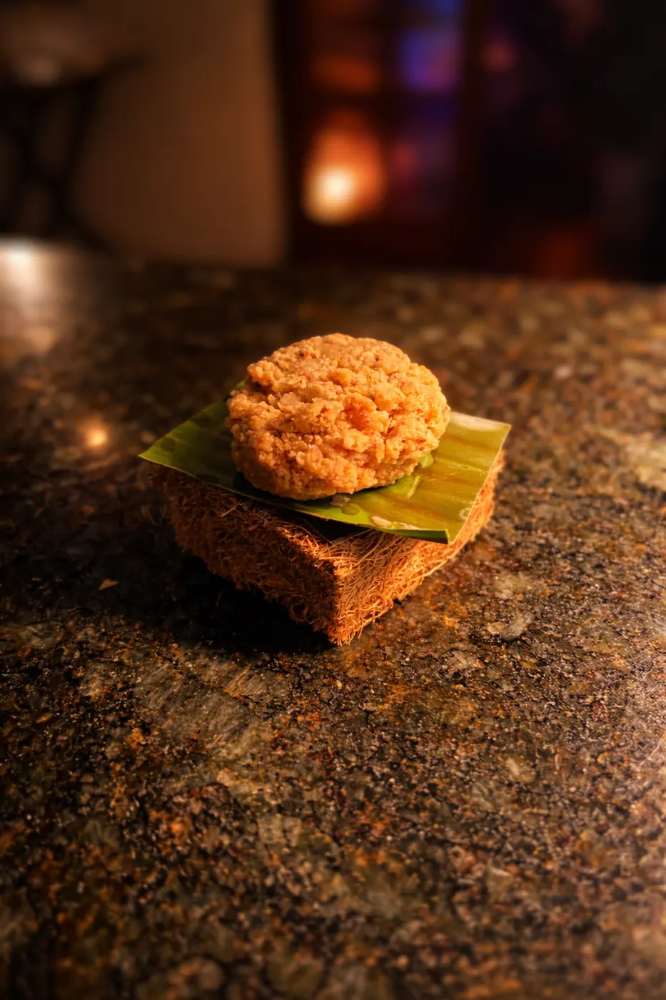
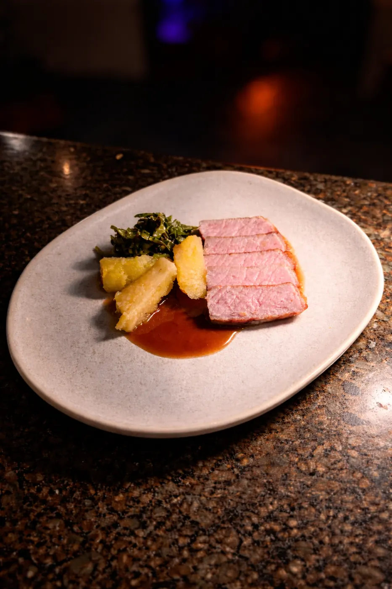
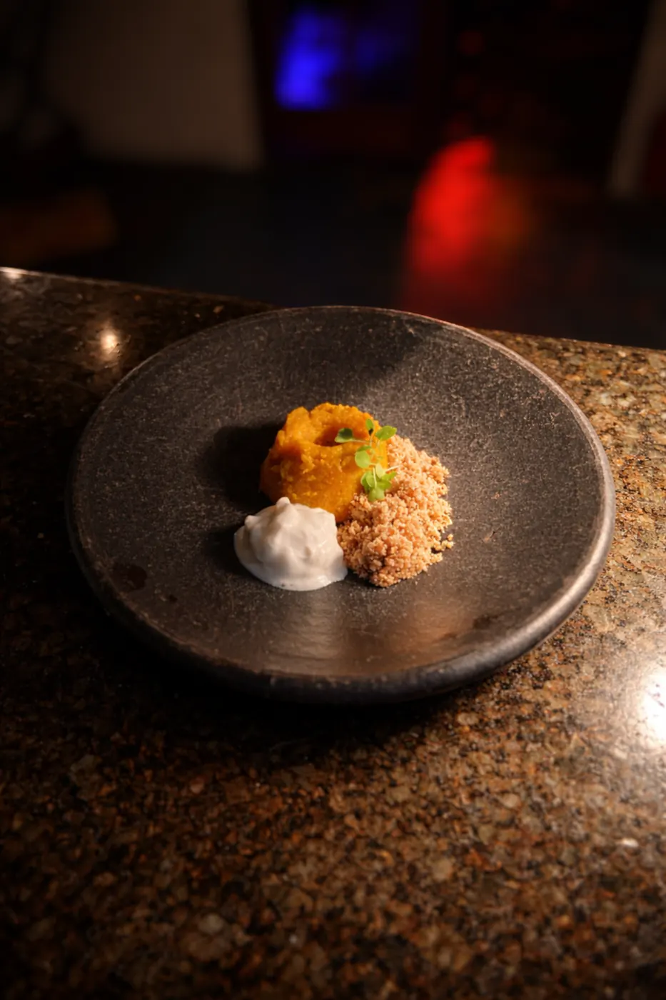
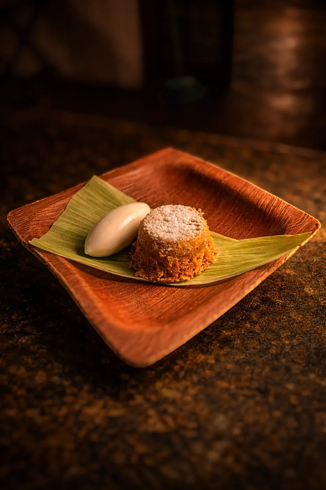

Arquivo · Menu degustação harmonizado com literatura
Festa do Interior
Nove pratos e nove textos literários para olhar a comida caipira a partir do presente.
Festa do Interior reuniu autores como Cora Coralina, Rubem Alves e Mário de Andrade, entre outros, e levou à mesa ingredientes, sabores e memórias do interior em uma cozinha contemporânea.
A festa aparece como fio condutor: aquilo que se colhe, transforma, cozinha, compartilha e celebra.

Rubem Alves

Mário de Andrade

Cornélio Pires
À mesa






